6.6. Three-phase circuits#
6.6.1. Star-star network#
 |
 |
6.6.1.1. General solution#
Tension \(v_{AB}\) between the centers of the stars \(A\), \(B\)
Proof.
PSCE is used on the linear network, leaving only one tension generator on at a time, and then combining the results.
Tension generator \(e_1\) on, \(e_2 = e_3 = 0\) off. Leaving \(e_1\) on, and switching off \(e_2 = e_3 = 0\), tension generator sees an equivalent impedance
so that:
the current through the generator reads
\[i_{1,1} = \dfrac{e_1}{Z_{eq,1}} = \frac{Y_1 Y_{234}}{Y_{1234}} e_1\]the currents through the other sides (acting as current dividers are):
\[\begin{split}\begin{aligned} i_{2,1} & = - \frac{Y_2}{Y_{234}} \, i_{1,1} = - \frac{Y_1 Y_2}{Y_{1234}} e_1 \\ i_{3,1} & = - \frac{Y_3}{Y_{234}} \, i_{1,1} = - \frac{Y_1 Y_3}{Y_{1234}} e_1 \\ i_{4,1} & = \ \ \ \frac{Y_4}{Y_{234}} \, i_{1,1} = \ \ \ \frac{Y_1 Y_4}{Y_{1234}} e_1 \\ \end{aligned}\end{split}\]tension \(v_{AB}\)
\[v_{AB,1} = e_1 - Z_1 i_{1,1} = \left( 1 - \frac{Y_{234}}{Y_{1234}} \right) e_1 = \frac{Y_1 e_1}{\sum_{k=1}^4 Y_k} \ . \]
PSCE. Exploiting the PSCE and the symmetry of the system, the expressions of currents in the phases, in the neutral and the center-center voltage seamlessly follow
6.6.1.2. Equilibrated generation and loads#
6.6.1.3. Extra connections#
6.6.1.3.1. Phase-neutral connections#
Connections of a phase with the neutral result in parallel impedence with the generators and/or the loads
6.6.1.3.2. Phase-phase connections#
Phase-phase connections don’t influence the voltage \(v_{AB}\) between the centers \(A\), \(B\).
todo Write the proof.